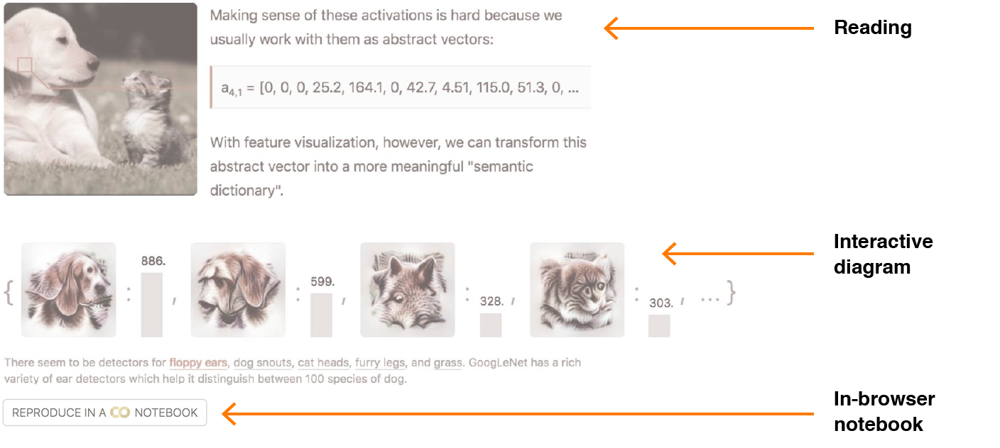

进展顺利的事项
- 为思想提供交互界面
- 将参与度视为一个连续谱
- 将软件工程最佳实践应用于科学出版
挑战与改进
- Distill 奖项
- 社区规模较小
- 审稿流程
其他调整
- 双重投稿政策
- 支持作者
- 扩大 Distill 团队
- 拓展 Distill 的领域范围
大约一年多前，我们正式推出了 Distill——一本开放获取的科学期刊。[1]
自那以来，我们经历了一段激动人心的旅程！从一些具体数据来看，Distill 已拥有超过百万的独立读者，总浏览量超过 290 万次。Distill 论文平均被引用 23 次。[2] 更重要的是，我们发表了几篇高度重视清晰度和可复现性的新论文，我们相信这有助于推动一种新的科学交流风格。
尽管如此，我们仍认为自己在某些方面存在不足，还有改进空间。为此，我们对如何做得更好进行了大量反思。我们计划做出以下调整：
- 将指导作者与评估文章的工作分开。
- 明确并简化 Distill 的审稿流程，其中包括一份新的审稿人工作表。
- 将重点从指导个人转向创建可帮助所有人的资源，首先创建一个 Slack 工作空间（在此加入）。
- 简化引入独立编辑以解决利益冲突的流程。
- 明确我们的双重投稿政策。
- 扩大 Distill 编辑团队，并开辟进入更多领域的路径。Arvind Satyanarayan 将加入编辑团队，负责监督 HCI + AI 领域的稿件。
进展顺利的事项
为思想提供交互界面
人们容易把解释视为思想之上的抛光层。我们相信，最好的解释往往要深刻得多：它们是思想的界面，是一种思考和与概念互动的方式。在此基础上，我们看到多篇 Distill 文章创建的可视化作品，将这些思考和互动方式具体化。
最能体现这类贡献的文章之一是 Gabriel Goh 的动量为何真正有效。Gabe 和其他优化研究者对这个问题的视角可能对从业者来说并不熟悉。它涉及对优化问题特征值谱的数学形式化，以及一种更非正式的解读和思考方式。在我们看来，传统的学术出版物并不重视阐明伴随技术思想的直观理解——那种教师在白板上与学生分享的内容。
相比之下，文章中的这张图不仅传达了形式化内容，还分享了作者的部分直观理解。在交互性的加持下，它邀请读者进入一种思考方式。最有趣的是，通过将心智模型具体化为一个由计算驱动的界面，作者发现了自己思考中不完善的地方——具体来说，引入动量后，特征值谱会以出人意料的方式变得平坦。
这种界面设计和思考方式对 Distill 来说并不新鲜，但过去一年我们得以帮助推动它向前发展，我们很期待它未来的走向。
将参与度视为一个连续谱
我们特别兴奋的一点是，文章能让深度参与思想的过程变得更轻松、更顺畅。通常，从阅读论文到实际测试和在其基础上构建之间存在巨大的跳跃。但我们开始看到一些论文将参与度设计成一个连续的谱：
都在探索这个想法。不仅重要的概念配有交互图表，还附带一个可以重现该图表的 Notebook。提供 Notebook 的意义不仅在于让读者测试想法——它让读者无需任何配置就能投入新的研究。有趣的新实验有时几分钟内就能完成。特征可视化可解释性的基本构建块可微分图像参数化

截至今天，已有超过 6000 名读者打开过这些 Notebook。这大约占到阅读过带 Notebook 链接文章读者的 3%。
可复现性长期以来被认为是维持科学严谨性的关键组成部分，作者们也越来越倾向于将自己的工作开源，甚至把中间产物（例如数据分析脚本）放到 GitHub 上。浏览器内 Notebook 让作者能更进一步，实践我们所说的“主动可复现性”：不仅在技术上允许复现工作，还让复现变得方便。我们希望看到更多作者在这方面投入精力。
将软件工程最佳实践应用于科学出版
在过去一年，我们也看到了将软件工程最佳实践用于运营科学期刊的诸多优势。每一篇 Distill 文章都托管在 GitHub 仓库中，同行评议通过 issue tracker 进行。我们发现这种方式能让读者对出版过程有更高的透明度。例如，读者可以看到 Gabriel Goh 的动量文章自首次发表以来的更新，可以逐一查看早期开发过程来了解文章思想的起源，还能阅读审稿过程中的往返讨论。更令人兴奋的是，我们看到读者参与了持续的、发表后的同行评议，包括提交 pull request 来修正错别字，进行更 深入 的 编辑，甚至引发了与作者的讨论。
作者也从这种设置中受益，因为 Distill 为科学论文提供了持续集成。在发表前，草稿文章会自动构建并通过密码保护的 URL 提供服务。作者可以自由分享这些地址来征求初期反馈，并确信读者始终能看到最新版本的草稿。
挑战与改进
Distill 奖项
很遗憾，我们尚未颁发 2018 年的 Distill 奖。我们收到了 59 份投稿，其中有几份是长达数小时的讲座系列。我们没有预料到这类内容，因此没有（至今也仍未）建立起良好的评估流程。部分问题在于我们在内容评估上过于追求完美。未来，我们希望在这一点上更好地平衡速度与质量。
我们争取在 2018 年感恩节前颁发 Distill 奖，并希望今后的评选过程能更加及时。
社区规模较小
Distill 旨在培育一种新的科学交流风格，并建立支持它的生态系统。我们希望随着时间推移扩大这个社区，但目前与传统学术 venue 相比，我们潜在的作者和编辑群体仍然相对较小。
这带来的一个后果是 Distill 的发文量较低（目前为 12 篇）。我们为此思考了很多：我们是否应该降低标准？这是不是值得我们担忧的问题？
归根结底，我们认为只要内容足够出色，在可预见的未来做一家规模较小但“精致”的期刊也是可以接受的。我们相信 Distill 主要通过赋予非传统研究成果合法性、并展示可能性来服务社区。这需要的是出版物的质量，而非数量。
身处小社区的另一个挑战是，社区成员之间往往存在社会联系。这固然很好，但也意味着我们必须处理大量潜在的利益冲突。这类利益冲突问题在新兴领域很典型，我们预计随着编辑团队的壮大，这个问题在未来几年会逐渐缓解。但在此期间，我们经常需要引入独立的 acting editor 来解决利益冲突。
我们之前引入独立编辑的流程是经过 Distill 指导委员会的成员。（我们非常感谢 Ian Goodfellow 在此过程中给予的耐心帮助。）然而，由于这种情况越来越常见，我们希望建立一个不需要频繁麻烦指导委员会的机制：
- 当出现利益冲突时，Distill 编辑将从研究社区中选择一位成员担任该文章的临时“acting editor”。acting editor 应是相关研究领域的成员，且与作者保持一定距离。acting editor 的使用和身份将在审稿记录中注明，如果文章发表则会公开。
审稿流程
在创办 Distill 时，我们采用了一种相当激进的审稿流程。我们知道大多数研究者并不具备撰写 Distill 所追求的那类文章所需的全部技能——尤其是设计技能。因此，我们提供了大量的指导和协助来帮助作者改进文章。
不幸的是，虽然这确实让我们产出了一些引以为傲的文章，但我们也发现自己在这上面举步维艰。Distill 编辑都是志愿者，在本职研究工作之外完成这些任务，而我们尝试的这种指导工作每篇文章可能需要 20 到 80 小时。结果是编辑们严重超负荷。我们还发现编辑们陷入了同时担任导师和做出编辑决定的双重角色，这种角色冲突有时会让人陷入瘫痪。
对部分作者而言，结果就是审稿流程缓慢且优柔寡断。
我们的作者和编辑都值得更好的体验。为此，Distill 将对审稿流程实施以下政策调整：
- Distill 的审稿流程将不再包含指导工作。取而代之的是，我们将建立其他渠道来支持作者（详见下文）。
- Distill 将只接收完整的文章投稿，并按其当前状态进行评估。
- 我们正在创建一份公开的审稿人工作表，更清晰地定义我们的评审标准。
我们的新政策在文章投稿页面有详细说明。旧政策已归档在此。默认情况下，此政策变更不适用于在旧政策下提交的文章。
Distill 的角色之一是让作者能够实验，并为不寻常的学术成果提供家园。规范审稿流程并不改变这一点；我们依然欢迎那些常规审稿流程未预料到的投稿，并在必要时调整流程。特别是，在接下来的一年，我们希望增加聚焦于窄题目的短文章数量。
我们也有兴趣找到支持早期研究结果交流的方式。我们担心当前的期望可能会促使作者等到结果足够成熟才分享，而这可能并不利于整个领域。目前我们不会对此做出任何政策调整，但正在积极考虑各种选项。如果您有想法，欢迎联系我们！
其他调整
双重投稿政策
为了让 Distill 有效赋予非传统出版形式合法性，它必须被视为一本主要的学术出版物。这意味着 Distill 需要遵循典型的“双重发表”规范。我们也需要避免让 Distill 被视为某篇 arXiv 论文的“配套博客文章”。
因此，Distill 只能考虑与已在其他地方正式发表的内容有实质性差异的文章，并对在其他地方非正式发表过的文章持谨慎态度。下面我们针对特定情况给出指导：
- 无先前发表 / 低调的非正式发表：没有问题！
- arXiv 论文：我们完全理解研究者有时需要快速发布结果，arXiv 是一个很好的渠道。只要明确 Distill 是正式出版物，我们很乐意发表你们的论文。无论如何，Distill 版本几乎肯定会更加完善。:)
- 先前的工作坊 / 会议论文：Distill 很乐意发表更完善、更精炼的“期刊版本”。（这是科学出版中的常见模式，尽管在机器学习领域较少见。）这些版本必须在先前出版物基础上做出实质性推进，可以通过改进阐述、更好地呈现底层洞见和思考方式、整合一系列论文，或增加更好的实验来实现。
- 高调的非正式发表：我们将其视为与工作坊或会议论文类似的情况，并适用上述相同期望。
支持作者
在过去一年，我们投入了大量精力指导个人撰写 Distill 文章。这通常意味着每篇投稿，编辑都要自愿提供数十小时的指导。虽然这很有价值，但无法规模化。
在接下来的一年，我们计划更多地关注可规模化的帮助方式，包括：
- 继续完善Distill Template，它提供了撰写精美、Web-first 学术论文所需的基础工具。我们将开始开发模板的第 3 版，并计划通过对作者工作流做出更多明确的选择，让它更易于使用。
- 撰写一份Distill 风格指南，总结我们发现的最佳实践。我们在编辑文章时经常遇到相同的问题，希望通过将解决方案整合到风格指南中，帮助所有作者避开这些陷阱。
- 分享我们的Distill 审稿人工作表，让作者可以用来自我评估文章并寻找改进空间。
- 建立一个 Distill 社区 Slack 工作空间，让大家可以在其中寻求建议、指导和寻找合作者。
扩大 Distill 团队
我们相信，扩大 Distill 编辑团队是其长期成功的最重要因素之一。让更多人参与 Distill 的日常运营，能让它更具韧性、更好地扩展，并减少利益冲突问题。
扩大编辑队伍固然重要，确保我们选对编辑同样关键。这意味着要组建一个与 Distill 独特价值观和使命高度一致的团队。为此，我们计划对潜在编辑采用以下评估流程：
- 撰写一篇优秀的 Distill 论文，向我们证明他们深刻理解 Distill 的使命，并具备评估他人工作的技术能力。
- 与现有编辑进行面试，讨论 Distill 的使命以及编辑的角色。
担任 Distill 编辑意味着要对 Distill 的成功以及你所在主题领域的发表决策承担所有权和责任。Distill 编辑是志愿职位，没有报酬——唯一的回报是能在推动一种新型科学出版中扮演关键角色。
作为这个方向的第一步，我们很高兴Arvind Satyanarayan 加入 Distill 编辑团队。Arvind 来自数据可视化和人机交互（HCI）社区，最初将专注于这些领域与机器学习交叉的文章。如果 Distill 找到合适的其他编辑，我们很乐意更广泛地扩展对 HCI 的覆盖。
拓展 Distill 的领域范围
从长期来看，我们认为 Distill 应该对扩展到其他学科持开放态度，由新的编辑负责不同的主题组合。
我们之前认为，在探索一种新的出版形式时，Distill 最好专注于一个它有编辑专业知识的“垂直领域”（机器学习）。我们依然认为 Distill 只应在拥有专家编辑的领域开展工作，但我们也认为这并非全部故事。只专注于机器学习加剧了我们社区规模小的问题，因为它将我们限制在机器学习与这种交流风格的交集上。
我们现在认为，Distill 的正确策略是在找到合适编辑的前提下，缓慢而谨慎地扩展到其他学科。这些新主题将成为同一个跨学科 Distill 期刊的一部分，就像 PLoS 或 Nature 一样。我们目前不打算细分或特许经营。
在考虑新主题的编辑时，Distill 将保持与所有编辑相同的期望（如上所述），但有两点调整：
- 虽然 Distill 通常不审阅其现有主题范围之外的论文，但我们将为潜在编辑候选人破例。现有编辑团队将评估阐述质量，同时邀请第三方编辑按照 Distill 的常规审稿流程帮助我们评估科学价值。由于这类审稿特别困难且成本高昂，我们只有在投稿明显是一篇非常优秀的文章时才会推进。
- 需要有第二位编辑共同承担新主题的责任。这可以是现有编辑扩展到新主题，也可以是与新编辑一起申请的人。拥有第二位编辑很重要，这样编辑们在遇到困难案例时有人可以讨论，也避免出现单点故障。
结语
Distill 是一本年轻期刊，正在探索一种新的科学交流风格。在第一年里我们学到了许多宝贵经验，但仍然有很大的成长空间。我们希望你能加入我们，一起拓展科学论文的边界！
Distill 感谢所有至今支持它的研究社区成员——我们的作者、审稿人、编辑、指导委员会成员、每一位在 GitHub 上提供反馈的人，当然还有我们的读者。很高兴有你们与我们同行！